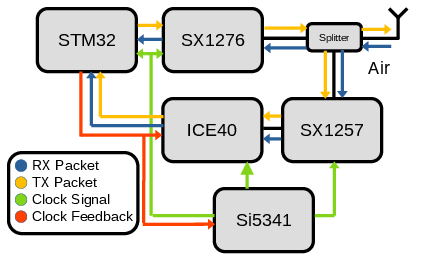

Research
LoRa clock synchronization & ranging
I collaborate with Meta's Open Compute Project on development of low-cost wireless platforms that can provide accurate (sub-10 nanosecond) clock synchronization over a LoRa link. We accomplish this using high-resolution matched filtering to superresolve packet timestamps using an FPGA. We couple this baseband hardware to a stable voltage-controlled oscillator, which allows us to use control theory techniques to stabilize clock time and frequency offset. In this project, I've covered a wide breadth of the wireless systems field, from simulation of DSP algorithms in Python, to wireless embedded system development in C, to DSP circuit implementation in Verilog. We are currently seeking publication for this work, but please email me if you're interested in learning more or collaborating.
Hardware
We've developed an SDR-like platform that uses an SX1276 LoRa transciever to send and receive LoRa packets over-the-air, while also looping the signal back for a high-bandwidth timing measurement. The SX1257, an integrated RF-frontend + LNA + ADC chip is used to make raw IQ measurements of the transmitted and received packets, which I then process in an ICE40 FPGA. The SX1257 can pick up both received LoRa packets and our own transmitted packets via an RF switch. This is a great architecture for research since it lets us use a full-featured LoRa transciever while also getting the raw signal measurements we need for highly accurate timing and positioning. Control of the system is handled with an STM32 microcontroller.
The FPGA's main purpose is to perform matched filtering with the downchirp in the LoRa preamble in order to detect packets. It also talks to the SX1257 to normalize the signal power. The FPGA continuously streams IQ data to a circular buffer in the STM32's RAM, stopping when a packet is detected.
Firmware
The STM32's first job is to accurately timestamp transmitted and received packets based on the IQ stream. The FPGA has already computed a rough timestamp, but we can find the matched filter peak more accurately by upsampling the signal. This is done in several stages along with some tricks to reduce computational complexity.
After an accurate time measurement has been made, we adjust the client clock's oscillator using a control loop to accurately align their timestamps. This allows range measurements to within 10-20 feet.
Wi-Fi Localization
During my undergrad I worked on algorithms to help robots navigate indoors using Wi-Fi beacon signals generated by access points. I used an antenna array to compute angle-of-arrival of the beacon packets at the robot and then several SLAM algorithms to reconstruct a map of the environment containing the access point location. These AP direction measurements help accurately reconstruct a map and reduce the computational complexity of navigation.
Publications
- Mundra, P., Huang, Z., Hunter, W., Arun, A., Khadela, D., Sinha, P., Bharadia, D., Ayyasomayajula, R. (2024). WiSenseHub: Architecture to deploy a building-scale Wi-Fi Sensing System. ACM Workshop on Wireless Network Testbeds, Experimental evaluation & Characterization (WiNTECH 2024). [Paper]
- Arun, A., Hunter, W., Ayyalasomayajula, R., and Bharadia, D. (2024). WAIS: Leveraging WiFi for Resource-Efficient SLAM. International Conference on Mobile Systems, Applications and Services (MOBISYS '24).[Paper]
- Arun, A., Hunter, W., and Bharadia, D. (2023). Demo Abstract: Accessible WiFi sensing leveraging Robot Operating System. (IPSN '23).[Paper]
- Arun, A., Ayyalasomayajula, R., Hunter, W., and Bharadia, D. (2022). P2SLAM: Bearing based WiFi SLAM for Indoor Robots. IEEE Robotics and Automation Letters.[Paper]